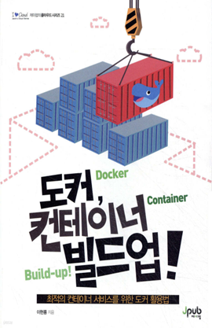

학습 목표
- 1. DevOps 엔지니어가 컨테이너 기반의 배포 자동화 및 운영 환경 표준화를 수행하는 데 필요한 도커 활용 능력을 기를 수 있다.
- 2. 백엔드 개발자가 애플리케이션을 컨테이너로 패키징하고 마이크로서비스 아키텍처 환경에서 서비스를 운영하는 데 필요한 도커 기본기를 익힐 수 있다.
교육 특징
-
1. 도커의 핵심 개념을 기초부터 차근차근 정리한 체계적인 커리큘럼
처음 도커를 접하는 입문자도 실습을 통해 개념을 자연스럽게 익히며 기초 다지기 가능
-
2. 실무 중심의 실습 예제로 컨테이너 운영 역량 강화
도커 설치부터 이미지 생성, 컨테이너 실행, 네트워크 구성 등 실습 기반 학습 구성
-
3. 클라우드 및 오케스트레이션 도구와의 연계 학습
컨테이너 기술을 클라우드 환경에서 활용할 수 있는 기반 역량 확보
교육 대상
- 1. 기업체 전 임직원
- 2. 도커를 배우고 싶은 직장인
- 3. 도커 컨테이너의 설치, 활용, 배포를 희망하는 개발자
강의 목차
- 제1장 Container 서비스 이해와 도커 활용
- 제2장 Container 서비스를 위한 도커 명령어 1
- 제3장 Container 서비스를 위한 도커 명령어 2
- 제4장 Container 서비스를 위한 도커 명령어 3
- 제5장 Container 서비스를 위한 도커 명령어 4
- 제6장 Container 서비스를 위한 도커 명령어 5
- 제7장 Docker Network
- 제8장 Docker Volume
- 제9장 Container 리소스 관리
- 제10장 Container 이미지 생성(Dockerfile)
- 제11장 Multi Container 서비스(Docker Compose)
강사 소개

강사명
이현용
경력
서울호서전문학교 오라클데이터베이스과 겸임교수(2010~2015)
삼성멀티캠퍼스 Unix & Linux 보안실무 사외강사(2014~2016)
(유)한국오라클 Oracle 공인강의 외부강사
HBI기술연구소 사외 수석연구원(IT컨설턴트)
데이터스토리허브 대표
Amazon AWS AAI CHAMPION(AWS 공인 강사)
기업 출강 기술 교육 (삼성전자, 롯데, 신한은행, LGcns, 한전KDN, 대검찰청, 국세청 등..다수)
삼성멀티캠퍼스 Unix & Linux 보안실무 사외강사(2014~2016)
(유)한국오라클 Oracle 공인강의 외부강사
HBI기술연구소 사외 수석연구원(IT컨설턴트)
데이터스토리허브 대표
Amazon AWS AAI CHAMPION(AWS 공인 강사)
기업 출강 기술 교육 (삼성전자, 롯데, 신한은행, LGcns, 한전KDN, 대검찰청, 국세청 등..다수)
참고 도서

도서명
도커, 컨테이너 빌드업!
저자명
이현용
도서소개
이 책은 저자의 오랜 강의를 통한 개념 전달 경험과 전문성을 반영하여 도커 컨테이너의 설치, 활용,
배포를 학습하고 AWS에서 사용해 보는 방법이 포함된 이론 및 실습서다. 도커를 이용한 컨테이너 서비스를 업무 애플리케이션에 도입하고자 하는 모든
사람들이 도커의 기본부터 충실히 배울 수 있도록 구성되었다.